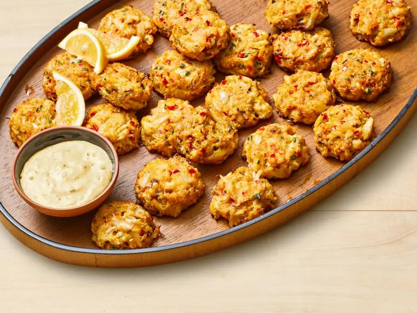
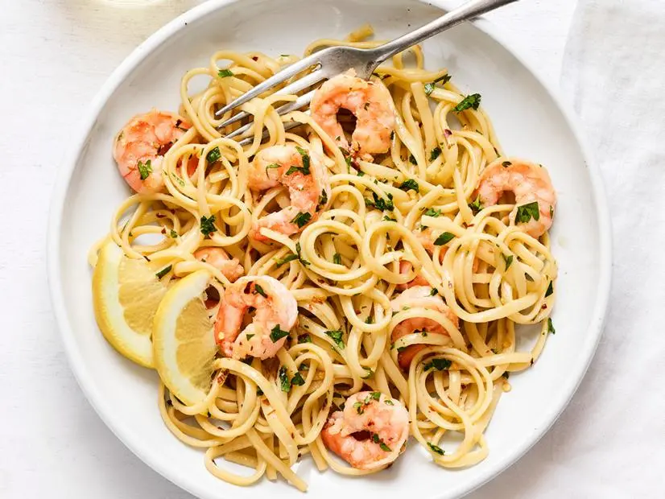
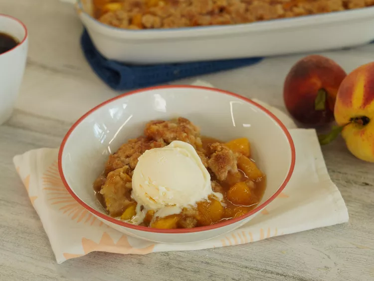

Stella's Stellar Cookbook
Table of contents:
Crab Cakes with Old Bay Donkey Sauce

Total: 1 hour Active: 20 minutes
Yeild: 18 to 20 crab cakes
Ingredients:
For the Crab Cakes:
- 1 tablespoon vegetable oil
- 1/4 cup finely chopped shallot
- 1/4 cup finely chopped celery
- 1/4 cup finely chopped red bell pepper
- 1/3 cup panko
- 2 teaspoons Old Bay Seasoning
- Kosher salt and freshly ground pepper
- 1 pound jumbo lump crabmeat
- 1 large egg, beaten
- 1/2 cup Donkey Sauce, recipe follows
- 4 teaspoons minced fresh chives
- 4 teaspoons minced fresh basil
For the Sauce:
- 2/3 cup Donkey Sauce, recipe follows
-
2 tablespoons fresh lemon juice, plus lemon wedges
for serving
- 1 tablespoon minced fresh chives
- 1 tablespoon minced fresh basil
- 1 teaspoon Old Bay Seasoning
Donkey Sauce:
- 2 heads garlic
- Extra-virgin olive oil, for drizzling
- Kosher salt and freshly ground pepper
- 1 cup mayonnaise
- 1 teaspoon yellow mustard
- 4 dashes of Worcestershire sauce
Directions:
-
Make the crab cakes: Heat the vegetable oil in a large
skillet over medium heat. Add the shallot, celery and
bell pepper; cook until just tender, 3 to 4 minutes. Stir
in the panko, 1 teaspoon Old Bay, 1/4 teaspoon salt and 1/2
teaspoon pepper; cook until the panko is lightly golden, 2
to 3 minutes. Transfer to a large bowl and let cool.
-
Add the crabmeat, beaten egg, Donkey Sauce, chives, basil
and the remaining 1 teaspoon Old Bay to the bowl. Fold
together until well combined, breaking up some of the crab.
-
Preheat the oven to 425°. Line 2 baking sheets with
parchment paper. Using a 1-ounce scoop, mound balls
of thecrab mixture (18 to 20 balls) on the baking sheets,
2 inches apart; flatten them slightly.
Refrigerate 10 minutes.
-
Bake, rotating the pans halfway through, until the crab
cakes are golden brown and cooked through,
15 to 18 minutes.
-
Meanwhile, make the sauce: Combine the Donkey Sauce,
lemon juice, chives, basil and Old Bay in a medium bowl
and stir. Serve the crab cakes with the sauce and lemon
wedges.
Donkey Sauce:
-
Preheat the oven to 350°. Slice off approximately 1 inch
of the pointed top of each garlic head so that the cloves
are slightly exposed. Place the heads on a sheet of foil
and drizzle with olive oil. Season with salt and pepper.
Tightly wrap the garlic in the foil. Place on a rimmed
baking sheet and roast until the garlic is very tender
and soft, 35 to 40 minutes.
-
Squeeze out 1/4 cup of the roasted garlic cloves
(reserve the rest for another use). Mash thoroughly.
-
Combine the mashed garlic with the mayonnaise,
mustard, Worcestershire sauce, 1/4 teaspoon salt and
pepper to taste in a medium bowl. Mix thoroughly.
Refrigerate until ready to use.
Classic Shrimp Scampi

Total: 30 minutes Active: 30 minutes
Yeild: 4 servings
Ingredients:
- Kosher salt
- 12 ounces linguine
- 1 1/4 pounds large shrimp, peeled and deveined
- 1/3 cup extra-virgin olive oil
- 5 cloves garlic, minced
- 1/4 to 1/2 teaspoon red pepper flakes
- 1/3 cup dry white wine
- Juice of 1/2 lemon, plus wedges for serving
- 4 tablespoons unsalted butter, cut into pieces
- 1/4 cup finely chopped fresh parsley
Directions:
-
Bring a large pot of salted water to a boil. Add the
linguine and cook as the label directs. Reserve 1 cup
cooking water, then drain.
-
Meanwhile, season the shrimp with salt. Heat the olive
oil in a large skillet over medium-high heat. Add the
garlic and red pepper flakes and cook until the garlic
is just golden, 30 seconds to 1 minute. Add the shrimp
and cook, stirring occasionally, until pink and just
cooked through, 1 to 2 minutes per side. Remove the shrimp
to a plate. Add the wine and lemon juice to the skillet
and simmer until slightly reduced, 2 minutes.
-
Return the shrimp and any juices from the plate to the
skillet along with the linguine, butter and 1/2 cup of
the reserved cooking water. Continue to cook, tossing,
until the butter is melted and the shrimp is hot, about
2 minutes, adding more of the reserved cooking water as
needed. Season with salt; stir in the parsley. Serve with
lemon wedges.
Fresh Southern Peach Cobbler

Total: 1 hour Active: 40 minutes
Yeild: 4 servings
Ingredients:
-
8 fresh peaches-peeled, pitted and sliced into thin wedges
- ¼ cup white sugar
- ¼ cup brown sugar
- ¼ teaspoon ground cinnamon
- ⅛ teaspoon ground nutmeg
- 1 teaspoon fresh lemon juice
- 2 teaspoons cornstarch
- 1 cup all-purpose flour
- ¼ cup white sugar
- ¼ cup brown sugar
- 1 teaspoon baking powder
- ½ teaspoon salt
-
6 tablespoons unsalted butter,
chilled and cut into small pieces
- ¼ cup boiling water
- 3 tablespoons white sugar
- 1 teaspoon ground cinnamon
Directions:
-
Gather all ingredients.
-
Preheat the oven to 425 degrees F (220 degrees C).
-
Combine peaches, 1/4 cup white sugar, 1/4 cup brown sugar,
1/4 teaspoon cinnamon, nutmeg, lemon juice, and cornstarch
in a large bowl; toss to coat evenly, and pour into a 2-quart
baking dish. Bake in preheated oven for 10 minutes.
-
Meanwhile, combine flour, 1/4 cup white sugar, 1/4 cup brown
sugar, baking powder, and salt in a large bowl. Blend in
butter with your fingertips or a pastry blender until mixture
resembles coarse meal. Stir in water until just combined.
-
Remove peaches from oven, and drop spoonfuls of
topping over them.
-
Mix 3 tablespoons white sugar and 1 teaspoon cinnamon
together in a small bowl; sprinkle over entire cobbler.
-
Bake in the preheated oven until topping
is golden, about 30 minutes